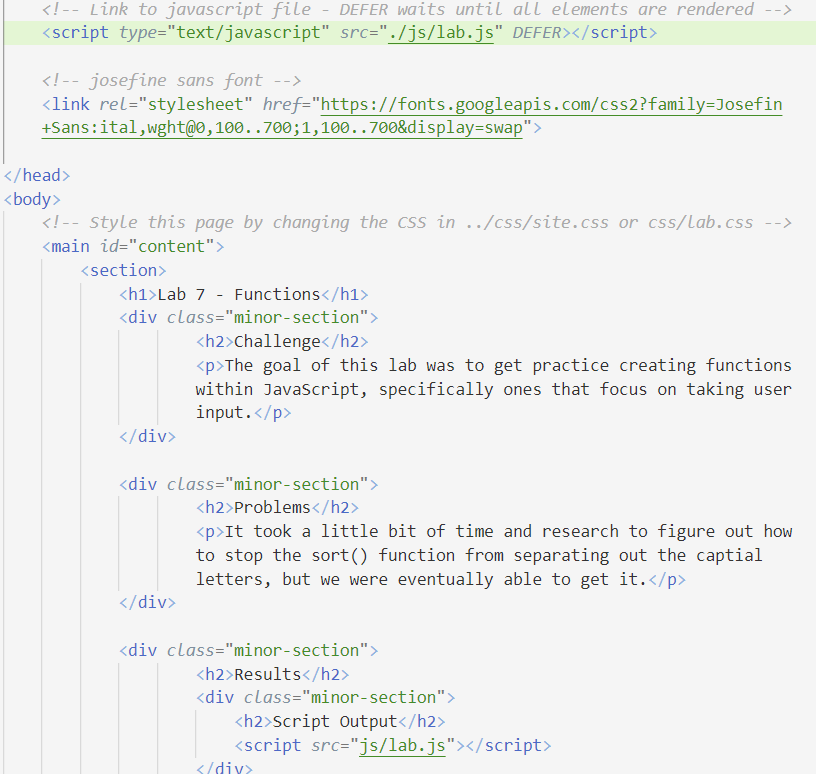
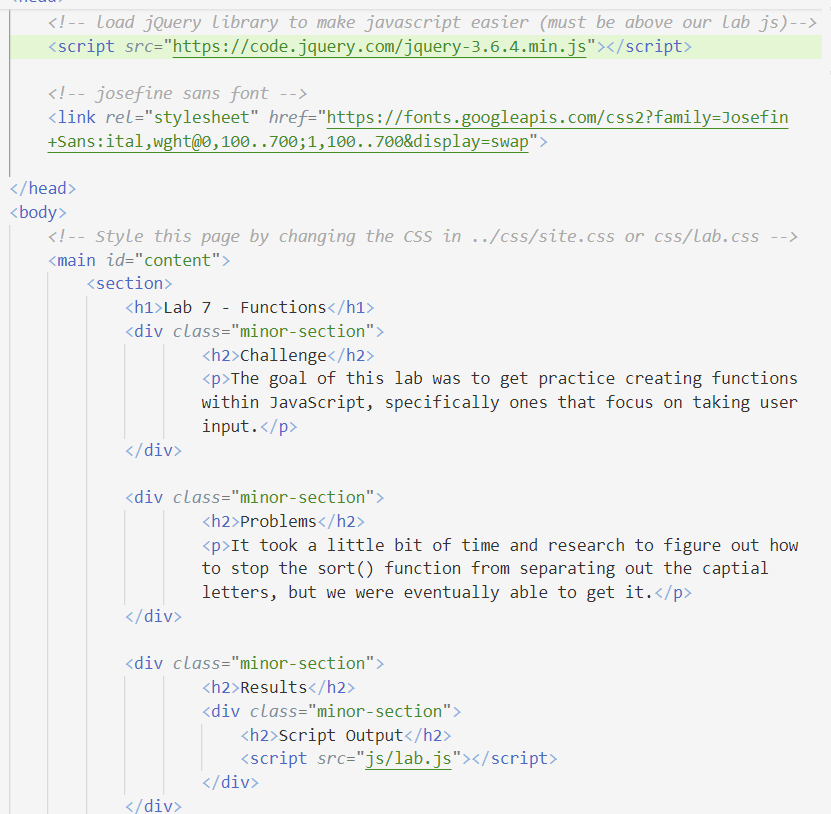
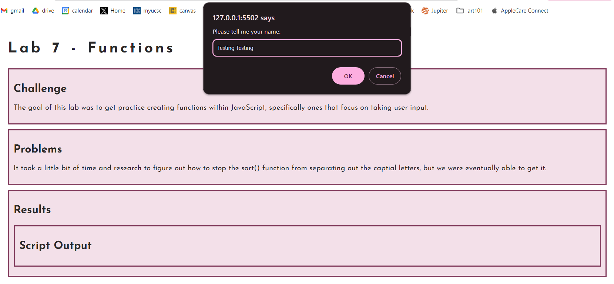

Lab 14: Debugging Tools and Strategies
Challenge
The goal of this lab is to go back and debug any errors from our previous labs from this quarter.
Problems
We didn't encounter any problems with debugging our old labs.
Debugging
For this assignment, we looked back at Lab 7. Previously, we had an issue with the box asking for user input appearing twice, which we discovered was the result of us calling the js file twice after encountering the same issue on a later lab (shown in the before image in the first and last line). To fix it, we simply deleted the first line we had that was calling the file (shown in the after image), leading to the input box only appearing once, solving the problem.
Before

After

Working webpage